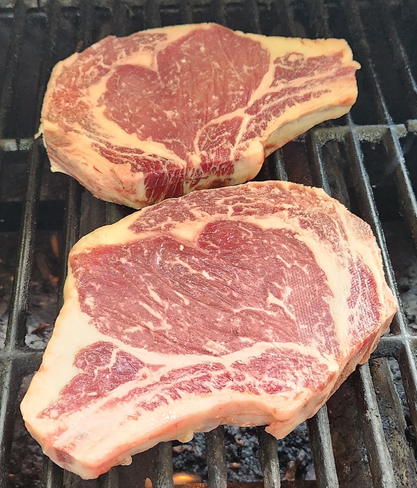

It is time to order your locally grown beef for 2024! With custom butchering, you can decide if you want a quarter, half or whole beef and get the cuts you want, the way you like them, when you want them!

December 18, 2023
January 15, 2024
February 19, 2024
March 25, 2024
April 29, 2024
May 20, 2024
$3.25*
per pound of hanging weight
*processing fees are an additional charge
A minimum $100 deposit per quarter is required to place an order and reserve a butcher date.
At this time we are not set up to take electronic payments and can only accept check or cash.
Start an order by clicking the link below, contact Dan (330-206-0898) or Sonia (330-575-3957) directly, or send an email at walkerbicentennial@gmail.com.
Unless other arrangements are made, all butcher dates are reserved with, animals delivered to and meat picked up at
Kiko Meats
Located at 1548 Union Ave, Minerva, Ohio
Phone 330-868-6439
Processing fees are listed at Kiko Meat’s website and a cut sheet is available here for your reference.
A 750-pound carcass will yield on average 500 lbs of meat with the average amount listed below from each area of the carcass
185 lbs of lean trim or ground beef
85 lbs round roasts and steaks
90 lbs chuck roasts and steaks
80 lbs rib and loin steaks
50 lbs of other cuts (brisket, flank, short ribs, skirt steak)
1. To reserve a butcher date, Dan or Sonia Walker must have the customer’s name, address, email, phone number, deposit, and desired butcher date(s) before confirmation will be completed.
2. Dates are booked on a first-come, first-served basis and are limited by the number of animals available.
3. We will attempt to accommodate a customer’s requested butcher date as much as possible, but if we need to change your request, we reserve the right to do so. We will attempt to give you as much notification in advance if such a change needs to occur.
4. A minimum deposit of $100 is required for every quarter of beef that is ordered (ie $200 for a half, $400 for a whole). Once the deposit is received, it will hold your beef order for the requested butcher date. The deposit will be 100% refunded or transferred to a new kill date if an order is canceled or rescheduled by noon of the day prior to the scheduled butcher date. There will be no refund if there are any changes in the order after the animal is delivered to the butcher shop.
5. Beef are normally butchered at Kiko Meats on Mondays, so they need to be notified of a cut order by the close of business on Friday of the week that the animal is butchered. If a cut order is not turned in on time and creates delays or problems with the orders of other customers, you will be responsible for any additional costs that may occur, including the full cost of any canceled orders from other customers. If your meat needs to be processed and you have not submitted a cut order or cannot be contacted in a timely manner, we will authorize Kiko Meats to process your meat with a standard cut order.
6. We will send you a reminder of your order the week of the butchering and notify Kiko Meats with the names and amounts of who will be receiving for each beef. It is up to you to indicate to Kiko Meats how you would like your meat processed (ie. desired number of cuts, number of steaks or pounds of meat to a package, thickness of steaks or weight of roasts, etc). See cut sheet on “The Butcher” tab for suggestions on how to process your beef. Don’t see your favorite cuts on the cut sheet? You can request these cuts, just be sure to ask for them specifically. Keep in mind the types of cuts and quantity of each can effect the availability of other cuts. To place your cut order, please contact Kiko Meats by calling 330-868-6439 or visiting at 1548 Union Ave, Minerva, Ohio on Mondays-Fridays (7 a.m. – 5:00 p.m.) and Saturdays (8 a.m. – 12 p.m.). Indicate that you are placing an order for a beef of Dan or Sonia Walker’s that was butchered on the date that you requested.
7. Once all of the cut orders for the entire beef (not just your portion of the beef) are received by Kiko Meats, they will process your order as you indicated and will notify you when your order is ready for pick up. Beef orders are typically ready for pick up at Kiko Meats approximately 1.5-2 weeks from the butcher date.
8. We will bill you for the beef separately from Kiko Meats’ processing fees. Our bill will be for the cost of the meat minus your deposit. Payment in full is expected within 30 days of the billing date. If you provide us with a check that has insufficient funds, a $30 service fee will be charged. If unable to pay the full amount in 30 days, please contact us for payment arrangements. At this time, we are unable to take electronic or credit card payments, but hope to have this option in the future.
9. For the purpose of estimating costs, the hanging weight for a whole beef averages 725 lbs.
10. Customers with an overdue balance from a previous order will not be able to place a new order until the previous order has been paid in full and the above requirements are met for any new orders.
11. Any questions, concerns or comments can be addressed to Dan or Sonia.
12. All deposits and payments can be mailed or delivered to 13942 Warren Rd, Paris OH 44669. Checks should be made out to Sonia Walker.
Policy implemented April 23, 2012. Policy updated October 1, 2023.